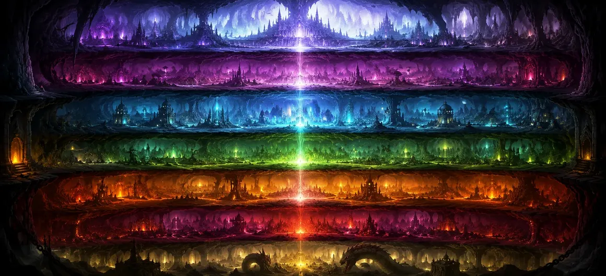

After learning about the Seven Higher Worlds and the celestial realms where sages, gods, and spiritually advanced beings reside, the sages became curious about another mysterious aspect of creation. They wished to understand the hidden regions that exist beneath the earthly plane—worlds rarely seen by humans yet described in the sacred scriptures as part of the divine cosmic order established by Lord Shiva. With reverence, they asked how these lower realms were formed, who inhabits them, and what purpose they serve within the vast structure of creation. Their inquiry revealed that just as there are higher worlds of light and spiritual elevation, there also exist lower realms possessing their own unique beauty, power, inhabitants, and spiritual significance.
The Shiva Purana explains that the Seven Lower Worlds are not realms of eternal punishment as sometimes imagined. Instead, they are vast regions within creation inhabited by Nagas, Daityas, Danavas, Yakshas, and many powerful beings possessing immense wealth, knowledge, and supernatural abilities. These worlds are often described as magnificent and prosperous, filled with extraordinary wonders hidden from ordinary human perception. Yet despite their splendor, the lower worlds remain part of the cycle of creation and are therefore subject to change, Karma, and divine law. Through their existence, Lord Shiva demonstrates that every region of the universe—whether above, below, or between—is governed by the same cosmic order and ultimately serves a purpose within the divine plan.
The first of the Seven Lower Worlds is Atala. According to the sacred texts, this realm possesses extraordinary beauty and abundance. It is inhabited by powerful beings who enjoy great comfort, wealth, and supernatural abilities. Unlike the earthly world, many limitations experienced by ordinary humans are absent in this realm. The Shiva Purana teaches that Atala demonstrates how material prosperity alone cannot grant lasting spiritual fulfillment. Even in worlds filled with luxury and power, the soul continues its journey until it seeks the eternal truth beyond temporary pleasures.
Below Atala lies Vitala, a mysterious realm associated with powerful energies and hidden treasures. Ancient scriptures describe this world as containing extraordinary resources and secret forces that remain concealed from the ordinary perception of human beings. The existence of Vitala reminds devotees that creation contains countless mysteries beyond physical observation. Every realm, visible or invisible, functions according to the divine order established by Lord Shiva and contributes to the balance of the cosmos.
Among the Seven Lower Worlds, Sutala is especially revered because it became the kingdom of the noble King Bali. Renowned for his generosity, devotion, and unwavering commitment to truth, Bali earned the blessings of the divine despite losing his earthly sovereignty. The scriptures describe Sutala as a magnificent realm filled with prosperity and divine protection. It stands as a reminder that humility, righteousness, and devotion can elevate a soul regardless of where it resides within creation.
A realm known for extraordinary knowledge and craftsmanship.
Filled with hidden sciences and subtle powers.
Even great power remains subject to Shiva’s cosmic order.
Talatala is associated with advanced knowledge, powerful beings, and remarkable accomplishments. Yet the Shiva Purana reminds readers that wisdom without spiritual realization remains incomplete. True perfection is attained only when knowledge is guided by devotion to the Supreme Lord.
Below Talatala lies Mahatala, a vast realm inhabited by powerful Naga beings. These serpent-like celestial entities possess immense strength, wisdom, and mystical abilities. Many among them are described as guardians of hidden treasures and keepers of ancient knowledge passed down through cosmic ages. The Shiva Purana portrays Mahatala as a world of great splendor and mystery. Despite their power, the Nagas remain subject to the universal laws established by Lord Shiva. Their existence demonstrates that strength and knowledge must always remain aligned with divine order.
Rasatala is inhabited by powerful Daityas and Danavas, beings renowned for their strength, ambition, and extraordinary abilities. Although often opposed to the gods in various sacred narratives, these beings are nevertheless part of the divine cosmic order and fulfill important roles within creation. The scriptures emphasize that divine law governs all beings equally. Whether god, sage, human, or Daitya, every soul ultimately experiences the consequences of its actions and remains connected to the Supreme Lord through the eternal law of Karma.
Patala is the seventh and deepest of the Lower Worlds. Contrary to common misconceptions, the sacred texts describe it not as a place of suffering but as a realm possessing astonishing beauty, wealth, and wonder. It is adorned with magnificent cities, radiant jewels, and extraordinary beings whose lives differ greatly from those of earthly existence. Yet even the splendor of Patala cannot escape the laws of impermanence. Like all created realms, it remains subject to cosmic cycles and divine governance. Thus, Patala serves as another reminder that no material realm, however magnificent, can equal the eternal reality of Lord Shiva.
All worlds exist within the same divine creation.
Every realm functions according to Shiva’s cosmic law.
The ultimate destination remains realization of the Supreme Lord.
The Shiva Purana teaches that the Higher Worlds and Lower Worlds are not opposites but complementary parts of the same cosmic structure. Together they reveal the immense diversity of creation and the limitless wisdom through which Lord Shiva governs the universe. Whether a soul resides in a celestial realm or a hidden world below, its ultimate purpose remains spiritual evolution and realization of the Supreme Truth.
The sacred scriptures describe the Lower Worlds as places filled with extraordinary treasures, rare jewels, and immense prosperity. Their cities are said to surpass many earthly kingdoms in beauty and magnificence. Vast palaces, radiant gems, and astonishing wonders illuminate these realms without the need for sunlight. The Shiva Purana uses these descriptions to demonstrate that material abundance can exist in many forms throughout creation. Yet wealth alone does not grant liberation. True spiritual fulfillment comes only through knowledge of the Supreme Lord and freedom from attachment to temporary possessions.
One of the important teachings of this chapter is that Karma operates equally throughout all realms of existence. Neither heavenly worlds nor lower worlds exempt a soul from the consequences of its actions. Every thought, intention, and deed contributes to the soul’s future experiences. Thus, the Shiva Purana reminds devotees that the universe is governed by perfect justice. Regardless of one's power, status, or place of residence, every being progresses according to its own actions while remaining under the compassionate supervision of Lord Shiva.
The sages then learned that the Lower Worlds, like all realms within creation, are ultimately subject to cosmic dissolution. At the appointed time, the cycles of creation come to an end, and the worlds gradually return to their subtle state. Nothing created remains forever unchanged. During these great cosmic transitions, the divine power of Lord Shiva guides the process of dissolution and renewal. Through this teaching, the sages understood that permanence belongs only to the Supreme Reality, while all worlds remain part of the ever-changing cosmic play.
Having heard the descriptions of both the Higher Worlds and the Lower Worlds, the sages were filled with wonder. They realized that creation is far more vast, complex, and beautiful than human understanding can fully comprehend. Every realm, whether above or below, exists according to a divine purpose. The sages offered their respectful salutations to Lord Shiva, acknowledging Him as the supreme source and ruler of all worlds. With minds purified by knowledge and devotion, they eagerly prepared to hear the next sacred teaching concerning the mysteries of the universe.
"The Seven Lower Worlds reveal that the universe extends far beyond human sight. Whether in realms above or below, all beings move under the law of Karma and the divine order of Lord Shiva, who alone remains eternal beyond every world."
The mysteries of the Seven Lower Worlds have now been revealed. Continue to the next chapter to discover how countless forms of life emerged within creation and how Lord Shiva's divine will gave rise to all living beings.